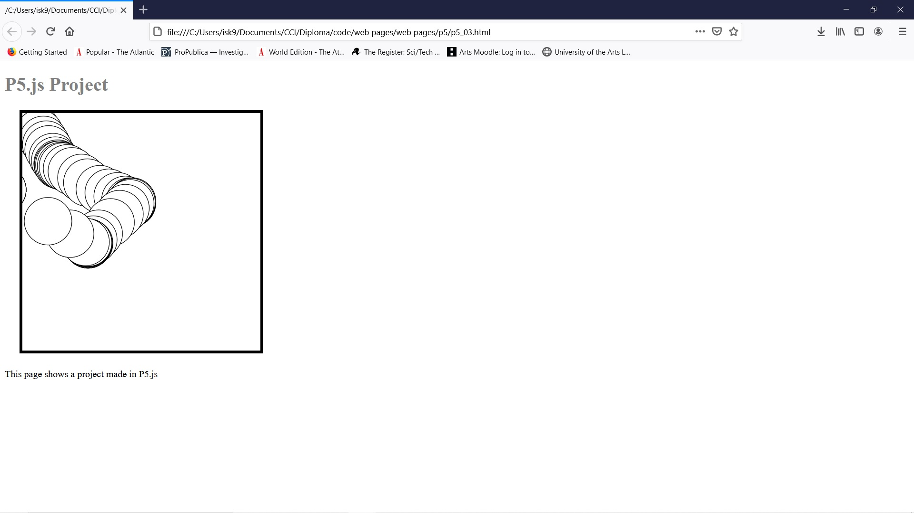

STRUCTURE AND CODE
This week’s workshop will be looking at the structure of code in projects. It will include JavaScript, HTML and CSS.
I will go through ways to think about code, and how to take an idea and make it in code.

I will also walk through how to put a p5.js project on a web page, and then use that example to go through how to create separate JavaScript and CSS files for a web page.
When you have an idea, you want to create that uses coding, it can be hard to break it down into the code you need. I’m going to break down an everyday action and then think how I would write that in code.
THINKING ABOUT CODE
When you have an idea, you want to create that uses coding, it can be useful to break it down into the actions and work out the code you need.
Things we do every day can be broken down into individual actions, just like when you have an idea you want to code. It can be interesting to think about an everyday action to work out what the steps would be if it were coded, so that’s what I’m going to run through
 I’m going to think about making a cup of tea. The stages I go through when I make a cup of tea are:
Turn the kettle on if it has water in it, if not fill it with water and then turn it on. Get a mug out of the cupboard and put a teabag in it.
I’m going to think about making a cup of tea. The stages I go through when I make a cup of tea are:
Turn the kettle on if it has water in it, if not fill it with water and then turn it on. Get a mug out of the cupboard and put a teabag in it.
From Idea to realization
In this video I’m going to take a very simple idea and then show you how to think about creating it. The idea is that when someone writes some text in the browser that text will appear on the web page.
So, if I break this down and draw it out, I’ll have a place that the text on the page will go, then I need somewhere for people to input text.
Publishing a Web Site on GitHub
This video is about publishing a static website using GitHub, you will need to have a GitHub account to do this. I will use the p5.js web page as an example.
There are lots of options for publishing a web sites, and which one you choose might depend on what you want your web site to do. For example, if you’ve created a Node.js application you would need to host it on a platform such as Heroku, Firebase, digital ocean or Amazon Web Services (AWS), you can also host on glitch depending on the complexity of the application.
If you want to publish static webs sites there are plenty of options for hosting them, they will normally be a fee for hosting and then a yearly fee if you buy a URL.
If you want to publish static webs sites there are plenty of options for hosting them, they will normally be a fee for hosting and then a yearly fee if you buy a URL.
And there is GitHub pages, which I will go through today, which is free and lets you host a web site straight from your GitHub repository.
This video assumes you have your own GitHub account and git on your computer and that you have set it up so you can push content to your GitHub account through a terminal window. I’ll be using visual studio code as well; this has an inbuilt way to use git and push to GitHub.
If you don’t know how to push content to GitHub let me know.
You can have one pages site per GitHub account, but you can link other repositories to the site, I’ll show you do that later.
Importing data to your web page
This video will go through how you can import data files into your web page with JavaScript. The two types of data files I will go through are CSV and JSON
CSV stands for comma separated values. CSV is one of the options you can save data from in a spread sheet. Each value from the spreadsheet is separated by a comma, and each line in the CSV file is a separate line in the spreadsheet.
So, if you compare the lines of a spreadsheet on the left with the CSV file on the right you can see there is a line for each line of data, and each piece of data is separated by a comma.
JSON stands for JavaScript Object Notation and uses key value pairs to structure the data. Curley braces show the start and end of the objects, and objects can be elements as can arrays, as seen in this example.
It is harder to create JSON as it isn’t easily exported from a spreadsheet, there are online resources for converting a CSV to JSON.
In this project I am using a JavaScript library called JQuery and using JQuery functions to bring the data into the web page. JQuery is a popular JavaScript library as it shortens the code, I used to use it a lot when I first leaned JavaScript, but then went to vanilla JavaScript as I found it helped me understand JavaScript better, it is a useful library though.